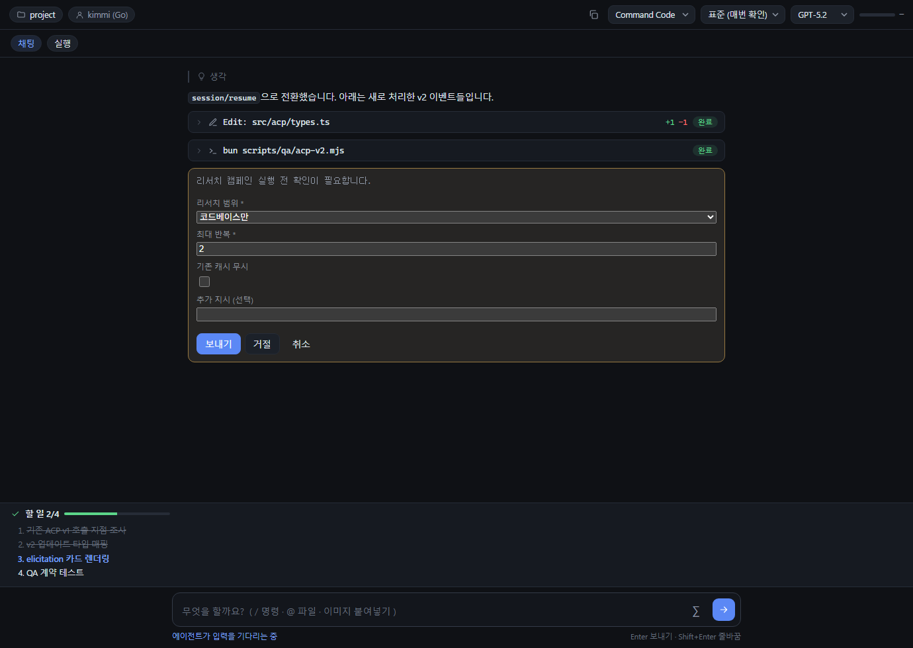
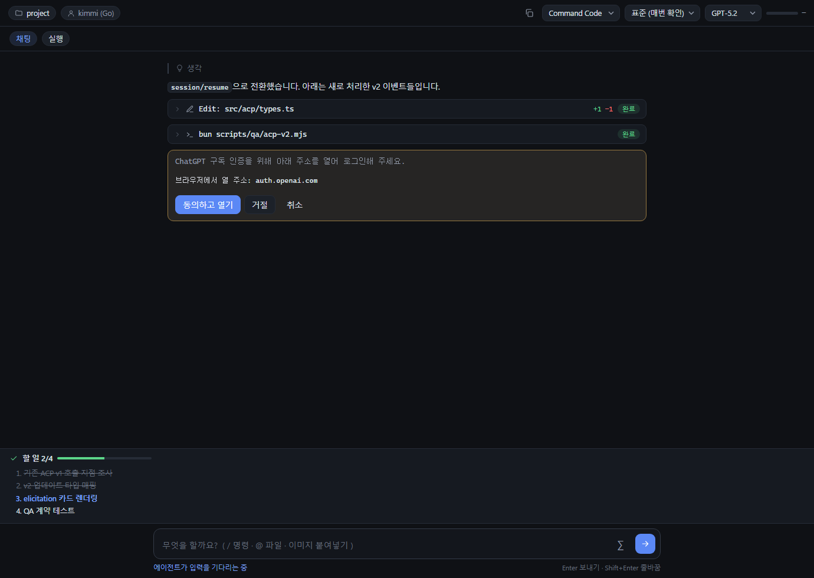
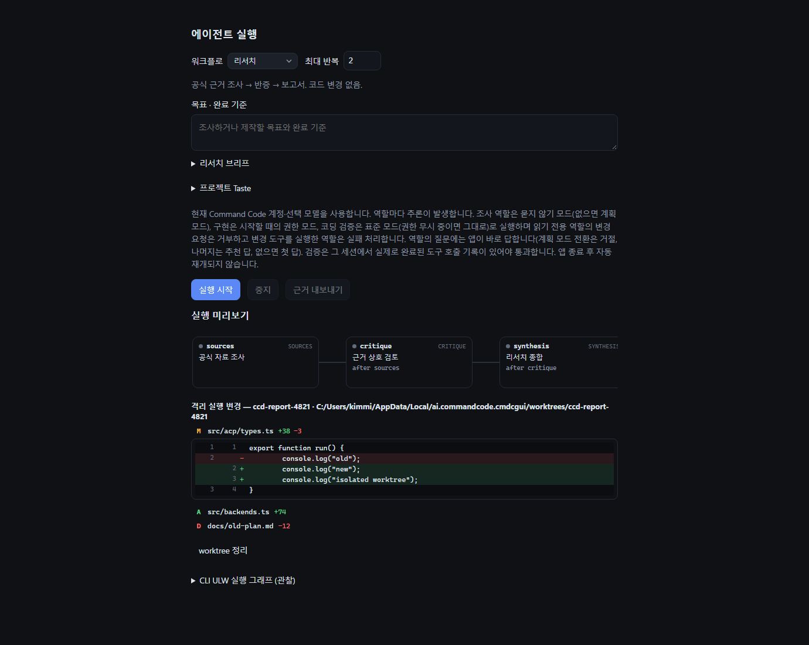
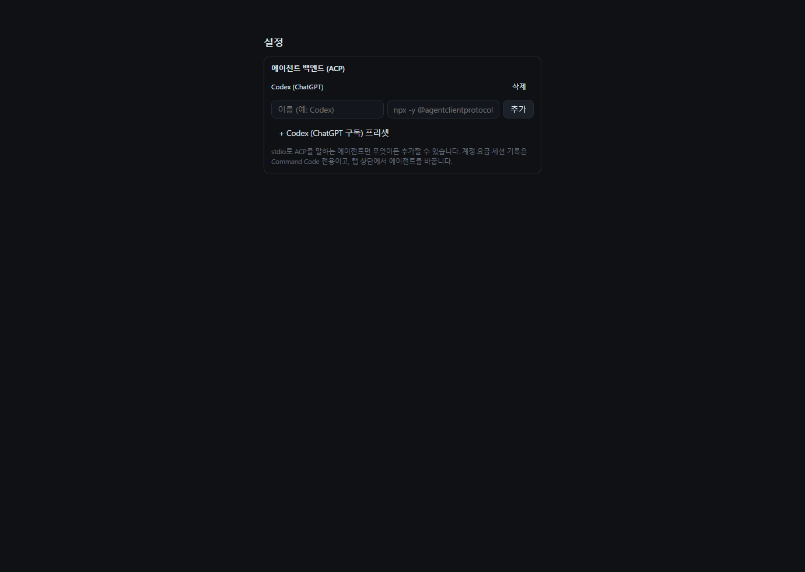

COMMAND CODE DESKTOP · 구현 결과 보고서 · 2026-11-03
P0~P4 전 항목 구현 완료 — ACP v2, 다중 에이전트, 격리 실행, 서명 업데이트
3라운드 리서치 보고서(docs/research/development-directions-2026-11-03.md)의 제안 우선순위를 전부 처리했습니다. 빌드와 오프라인 QA·Rust 테스트는 통과했고, 실제 CLI/모델이 필요한 구간은 미검증으로 표시했습니다.
검증 범위: 이 컴퓨터에 Command Code CLI가 설치되어 있지 않아 실제 에이전트와의 라이브 프로토콜 실행은 확인하지 못했습니다. 아래 "미확인 항목"이 남아 있습니다.
한눈에 보는 결과
P0ACP v2 업그레이드
프로토콜 버전 2 제안 + v1 폴백. session/resume·session/delete·plan_update·state_update·에이전트 터미널·elicitation/create·$/cancel_request·auth/login 구현. QA 스크립트 35항목 통과.
P1리서치 해자
.research/ 캠페인·브리프·주장 장부는 직전 커밋(a28f93e)에 이미 구현·테스트되어 있음을 확인하고, 격리 실행으로 보강했습니다.
P2범용 ACP 백엔드
acp_spawn이 커스텀 에이전트를 받습니다. 설정에서 임의 ACP 명령 등록 + "Codex (ChatGPT 구독)" 프리셋(@agentclientprotocol/codex-acp). 탭 상단 백엔드 선택으로 전환.
P3격리 실행 + Changes 뷰
빌드/Taste 워크플로가 git worktree에서 실행됩니다(기본 켜짐). 종료 후 변경 파일 목록·diff·worktree 정리 버튼을 실행 탭에 표시합니다.
P4배포 파이프라인
PR #1(Windows NSIS CI) 병합 완료(32ee9ae). tauri-plugin-updater 설정 + minisign 키 생성 + 배포본 업데이트 확인 UI + docs/DISTRIBUTION.md.
부분 완료라이브 검증 게이트
실 에이전트 프로브로 cmd(v1 협상, list/resume/close)·codex-acp(v2, ChatGPT authMethods) 핸드셰이크를 실측했고, 그 과정에서 initialize 스키마·cancel 필드명·configId 등 상호운용 버그 3건을 수정했습니다. 로그인 완주·업데이트 다운로드는 잔여.
화면 미리보기 — 실제 컴포넌트 렌더링
오프라인 프리뷰 하네스(scripts/qa/preview.ts)가 진짜 ChatView·ExecutionPanel·설정 블록을 띄우고, 모의 ACP 피어가 v2 이벤트를 흘려보낸 결과입니다. 라이브 에이전트가 아닌 오프라인 렌더 검증이며, 실제 에이전트와의 동작은 별도 게이트입니다.

state_update: requires_action 표시.


리서치 요약 (선행 조사 결과)
- ACP v2 스펙 확정: 세션
list/resume/delete,plan_update(todos mod 없이 Plan 패널 가능),state_update, 에이전트 소유 터미널,elicitation(form/url),$/cancel_request,auth/*. CLI 최신 1.88.2. - WP-03 재정의: 자체 Codex 어댑터 대신 공식
codex-acp+ 범용 백엔드로 해결 — ChatGPT 구독 인증이 어댑터에 내장. - 차별화: 일반 채팅 GUI는 이미 상품화(ACP 클라이언트 100+). 해자는 유형화 리서치 + 주장 장부 + 검증 영수증 + 무인 역할 — 공식 데스크톱도 dont-ask를 지원하지 않음.
P0 — ACP v2 상세
| 항목 | 구현 | 위치 |
|---|---|---|
| 버전 협상 | PROTOCOL_VERSION = 2 제안, 에이전트 응답 버전 사용. v1 업데이트 이름도 계속 수신. | src/acp/client.ts |
| 세션 수명주기 | session/resume(canResume 시, 아니면 load), session/delete(canDelete 시 사이드바 × 버튼 + 확인), session/list 기존 유지. | client.ts, chat.ts, main.ts |
| 업데이트 종류 | plan_update·state_update(requires_action 표시)·user/agent_message(messageId)·agent_thought·tool_call_content_chunk 추가. 리플레이 중복 억제에도 반영. | types.ts, chat.ts |
| 에이전트 터미널 | terminal_update/terminal_output_chunk를 읽기 전용 execute 카드(terminal:<id>)로 표시. | chat.ts upsertTerminal |
| Elicitation | elicitation/create 서빙: 폼(string/enum/number/boolean/array) → 카드 UI, url 모드 → 동의 후 시스템 브라우저. 무인 워크플로 역할은 decline 자동 응답. | client.ts, chat.ts onElicitation |
| 취소 | 타임아웃·session/cancel마다 $/cancel_request 발송. 모든 취소 경로가 cancelSession() 사용. | client.ts, chat.ts |
| 인증 | authMethods 노출, auth/login 헬퍼. | client.ts |
P2 — 범용 백엔드 상세
src/backends.ts신규: 백엔드 레지스트리(builtin Command Code + 사용자 정의),parseCommandLine, codex 프리셋(Windows는cmd.exe /c npx …로 shim 해결).acp_spawn에agent: Option<AgentSpec>추가 — 커스텀 에이전트는 사용자 환경을 상속(npx/uvx가 풀림), Command Code env는 주지 않음.- 프로세스 풀 키가
backend|account|cwd로 확장,restart가 backendId를 유지. - 설정 → 에이전트 백엔드: 추가/삭제 UI + codex 프리셋 버튼. 탭 헤더의 백엔드 드롭다운(커스텀 등록 시에만 표시)으로 전환 — 세션은 이식되지 않으므로 새 대화 시작.
- 레시피 문서:
docs/BACKENDS.md.
P3 — 격리 실행 상세
src-tauri/src/worktree.rs신규:worktree_create(앱 데이터 폴더에ccd-<slug><ts>브랜치 체크아웃),worktree_changes(porcelain + numstat),worktree_file_diff(HEAD 대비 텍스트 쌍),worktree_remove.- 실행 탭에 "격리 실행" 체크박스(빌드/Taste만 표시, 기본 켜짐). 역할 세션의 cwd가 worktree 경로로 바뀌어 원본 작업본을 건드리지 않음.
- 실행 종료 후 변경 파일 목록(A/M/D + 줄 수), 파일별 인라인 diff, "worktree 정리" 버튼. 자동 merge는 하지 않습니다 — 브랜치를 리뷰 후 수동 반영.
- git 저장소가 아닌 프로젝트에서는 체크박스를 끄면 기존 동작 유지.
P4 — 배포 상세
- PR #1 병합: Windows NSIS CI(두 잡 모두 workflow_dispatch 통과 확인 후 merge) → origin/main
32ee9ae, 로컬 fast-forward. @tauri-apps/plugin-updater2.14.1(JS+Rust) 추가, lib.rs 플러그인 등록, capabilityupdater:default.tauri.conf.json:createUpdaterArtifacts+ endpoints(releases/latest/download/latest.json) + minisign 공개키 + Windows passive 설치 모드.- 키: 개인키
~/.tauri/cmdc-gui.key(저장소 밖, 비밀) — 분실 시 업데이트 체인 단절. - 업데이트 창에 "배포본 (설치 파일)" 블록:
check()→downloadAndInstall()→ 종료 시 적용. docs/DISTRIBUTION.md: 릴리스 절차, latest.json 스키마, SmartScreen/공증 단계(Azure Trusted Signing 등) 정리.
검증 결과
| 검사 | 결과 |
|---|---|
pnpm build (tsc + vite) | 통과 |
bun scripts/qa/workflow.mjs (research/team/build/taste, 재시도, malformed 판정, 취소) | "passed": true |
bun scripts/qa/acp-v2.mjs (신규: 프로토콜 계약·백엔드·worktree·updater 정적 단언 35항목) | "passed": true |
cargo check / cargo test --lib | 8/8 통과 |
| GitHub: PR #1 병합, 로컬 fast-forward | 32ee9ae |
라이브 검증 결과 (2차 — 실 에이전트 프로브)
이 보고서 작성 후 scripts/qa/live-init.mjs 프로브로 두 에이전트를 실제로 스폰해 핸드셰이크를 검증했고, 그 과정에서 실제 상호운용 버그 3건을 발견·수정했습니다.
| 검증 | 결과 | 발견·조치 |
|---|---|---|
command-code@1.88.2 acp initialize | 실측 | v2 제안에 v1으로 다운 협상. sessionCapabilities: list/resume/close 실제 지원, delete 없음 → capability 게이트가 정확히 작동함을 확인 |
session/list · session/resume | 실측 | 실 CLI에서 기존 세션 조회·재개 성공, available_commands_update 수신 확인 |
codex-acp@2.5.0 initialize + session/new | 실측 | v2 응답. authMethods: api-key / chat-gpt / chat-gpt-device-code — ChatGPT 구독 인증 경로 실존 확인. session.delete·fork·additionalDirectories 지원 |
| v2 initialize 스키마 | 수정 | v2는 capabilities/info 필드명(v1은 clientCapabilities/clientInfo). codex-acp가 v1 형태를 -32602로 거부 → 클라이언트가 두 형태를 동시 전송 + v1 재시도 폴백, 응답도 v2→v1 정규화 |
$/cancel_request 필드명 | 수정 | 스펙 확인 결과 requestId(id가 아님) — 잘못 보내던 것 수정 |
v2 configId / methodId 필드명 | 수정 | configOptions의 configId, authMethods의 methodId를 v1 이름으로 정규화 — 미적용 시 codex 세션의 모델/모드 선택 UI가 깨졌을 것 |
| elicitation 페이로드 형태 | 스펙 대조 | {action: accept|decline|cancel, content?} 응답, form/url 모드, requestedSchema 형태 모두 일치 확인(구현 정확). 실 에이전트 수신만 잔여 |
@agentclientprotocol/acp-tck | 확인 | npm에 미공개(E404) — 정적 계약 QA(acp-v2.mjs)가 현재 최선, 유지 |
Windows npx command-code | 발견 | 패키지 cmd 바이너리가 cmd.exe와 충돌 → commandcode/cmdc 별칭 필요, BACKENDS.md에 문서화 |
프롬프트 왕복은 실계정 토큰 소모가 있어 수행하지 않았습니다. codex-acp가 에이전트→클라이언트 요청에 "Invalid message"를 stderr로 기록한 1건은 실패 없이 핸드셰이크·세션 생성 모두 성공해 잔여 관찰로 남깁니다.
미확인 · 남은 과제
| 항목 | 상태 | 확인 방법 |
|---|---|---|
| elicitation 실제 발화(에이전트가 보내는 순간) | 잔여 | 스펙·페이로드는 검증 완료 — codex-acp 로그인 흐름에서 URL 모드가 실제로 올 때 카드 렌더 확인 필요 |
| codex-acp ChatGPT 로그인 완주 | 잔여 | 핸드셰이크·authMethods는 실측 완료 — auth/login→URL 동의→로그인→프롬프트 왕복은 계정 액션 필요 |
| cmd 프롬프트 왕복(토큰·전사 저장) | 잔여 | 실계정 추론 비용 — 사용자 승인 시 소량 테스트 가능 |
| 설치본 자동 업데이트 E2E | 부분 | 서명 빌드(.sig 생성)는 로컬 검증 — latest.json을 릴리스에 올려야 다운로드 경로 확인 가능(DISTRIBUTION.md 절차대로) |
| Windows NSIS 서명(SmartScreen) | 차단 | 코드 사이닝 인증서(Azure Trusted Signing 등) 구매 필요 — 현재는 minisign 업데이트 서명만 |
다중 계정 약관 / billing.ts /alpha/ API 권한 | 보류 | 정책 확인 전까지 기존 문서화된 위험으로 유지 |
기존 계획의 다음 항목: 라이브 모델 품질 검증, macOS에서 네이티브 QA, 설치본 QA — 모두 실 환경 게이트로 기존 규칙에 따라 "통과 선언"하지 않습니다.
변경된 파일
src/acp/types.ts,src/acp/client.ts,src/acp/pool.ts— v2 프로토콜·elicitation·백엔드 키src/backends.ts(신규),docs/BACKENDS.md(신규)src/views/chat.ts— v2 업데이트 처리, elicitation 카드, 백엔드 전환, 격리 실행 훅src/ui/execution.ts,src/ui/platform.ts,src/styles.css— 격리 체크박스·Changes 뷰·elicitation/백엔드 스타일src/main.ts— 세션 삭제, 백엔드 설정, 배포본 업데이트 블록src-tauri/src/acp.rs,src-tauri/src/worktree.rs(신규),src-tauri/src/lib.rs,Cargo.toml,tauri.conf.json,capabilities/default.json,package.jsonscripts/qa/acp-v2.mjs(신규),docs/DISTRIBUTION.md(신규),README.md